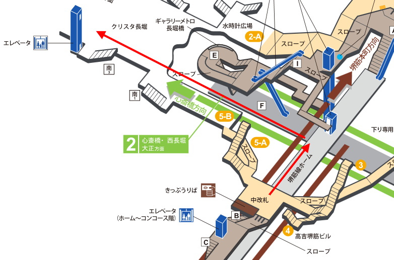
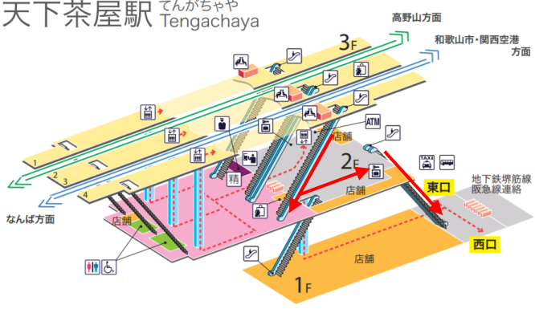

路線示意圖
時刻表

JR大阪站置物櫃攻略
4號月台自右方 42, 42手扶梯至1F
自南口出站

3號處置物櫃

316×355×575(mm) 300円 170個
550×355×575(mm)（キャリーバッグ可） 400円 71個
843×355×575(mm)（スーツケース可） 600円 14個
補充
北方10號處東西通路有大量置物櫃

316×355×575(mm) 300円 470個
550×355×575(mm)(キャリーバッグ可) 400円 96個
550×455×575(mm)(キャリーバッグ可) 400円 4個
843×355×575(mm)(スーツケース可) 600円 46個
1200×355×575(mm)(ゴルフバッグ可) 800円 4個